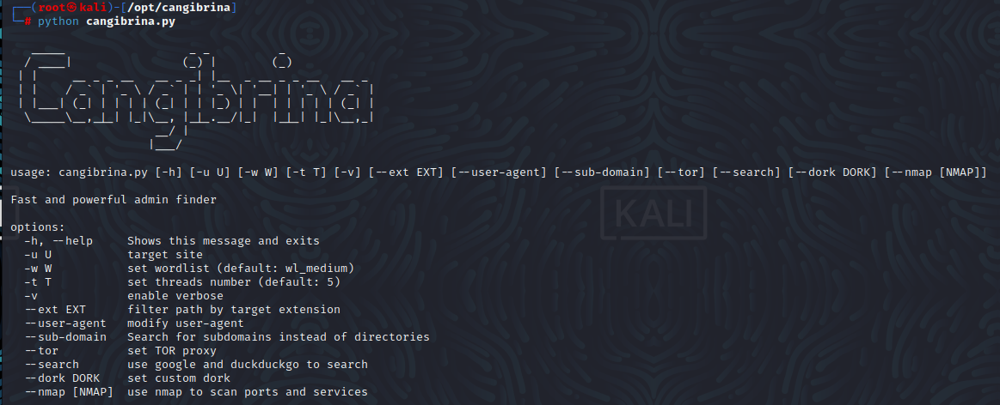
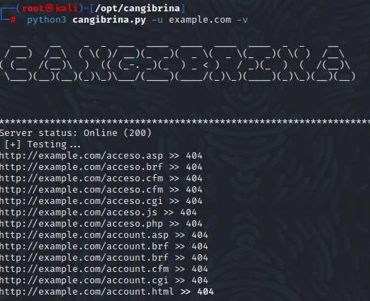

Cangibrina nədir və istifade üçün nə toolar lazımdı?
İdarə Paneli Axtarışı
Cangibrina, wordlist, google, nmap və robots.txt üzərindən brute-force istifadə edərək saytların idairəedici panelini əldə etməyi hədəfləyən çox platformalı bir vasitədir.
Tələblər:- Python 2.7
- mechanize
- PySocks
- beautifulsoup4
- html5lib
- Nmap (--nmap)
- TOR (--tor)
Linuxa yükkləməkI
- git clone https://github.com/fnk0c/cangibrina.git
- cd cangibrina
- pip install -r requirements.txt
İstifadə Qaydası
cangibrina.py [-h] [-u U] [-w W] [-t T] [-v] [--ext EXT] [--user-agent] [--sub-domain] [--tor] [--search] [--dork DORK] [--nmap [NMAP]]
- -h, --help: Cangibrina toolunda istifadə edə biləcəyiniz komutlar ve açılışını göstərir
- -u, U: Hədəf sayti: məs: https://www.aztu.edu.az/az
- -w, W: Wordlist qoymaq üçün istifadə olunur, /usr/share/wordlists den istədiyinizi qoya bilərsiniz (default:wl_medium)
- -t, T::Toolun nə qədər sürətdə taramasını göstərir (default 5).
- -v: : Verboz edir yəni biz bunu yazanda kodun necə işlədiyini görə bilərik.
- --ext, EXT: : Yalnızca belirli dosya uzantılarına sahip olan dosyaların taranmasını sağlar.Məsələn, Cangibrina'yı yalnızca PHP (.php) və JavaScript (.js) tarayacaq
- --user-agent: User agent, web tarayıcılarının veya diğer HTTP istemcilerinin sunuculara kendilerini tanıtmak için kullandığı bir HTTP başlığıdır. User agent, istemcinin türünü, sürümünü ve diğer ilgili bilgileri sunucuya ileterek sunucunun yanıtı buna göre şekillendirmesine olanak sağlar.
- --sub-domain: Cangibrina toolunda directory yerinə alt domainləri tarıyır
- --tor:: Cangibrinada belə bir funksiya yoxdu deyəsən,ama tor dark webdi, yəqin dark üeb taramasi edirç bilmirəm :/
- --search: Taradığımız web saytında axtarış edirş Məs: --search admin bu yalnizda sonu adminlə bitənləri göstərəcək.
- --dork, DORK: "Cangibrina --dork" seçeneği, Cangibrina aracını istifadə edərək hədəf veb saytında zəif nöqtələri və ya gizli məlumatları axtarmaq üçün müəyyən bir axtarış ifadəsindən (dork) istifadə etmək üçündür.Məs inurl:admin domeni URL-də "admin" sözü olan səhifələri tapmaq üçün vebsaytlarda axtarış aparır.
- Son olaraq, device seçimi, MacChanger toolunun istifadə ediləcək şəbəkə qurğusunun adını təyin edir.
